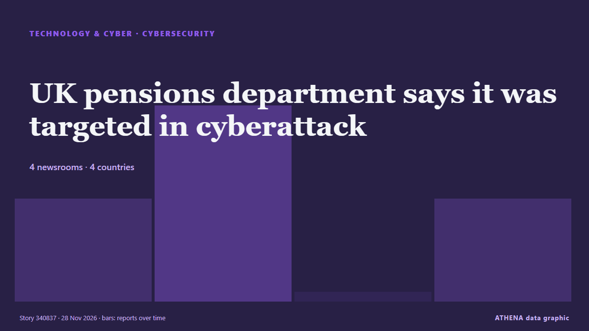

Technologie, IA et cybersécurité
SponsoriséPrésenté par  Cybernetics and Artificial Intelligence Lab Welcome to the Cybernetics and Artificial Intelligence Laboratory, established at the Department of Business Administration of the National and Kapodistrian University of Athens. The lab is headed by Professor Dimitrios Thomakos. The lab aims to do research that can be published in top venues. Our research uses tools and methods of Artificial Intelligence, and lies in the following areas: - Forecasting - Decision making - Cyber security - Finance We are always looking forward to collaborating with exceptional students!
Cybernetics and Artificial Intelligence Lab Welcome to the Cybernetics and Artificial Intelligence Laboratory, established at the Department of Business Administration of the National and Kapodistrian University of Athens. The lab is headed by Professor Dimitrios Thomakos. The lab aims to do research that can be published in top venues. Our research uses tools and methods of Artificial Intelligence, and lies in the following areas: - Forecasting - Decision making - Cyber security - Finance We are always looking forward to collaborating with exceptional students!
Les titres sont affichés en anglais, tels que publiés.

CybersécuritéUK pensions department says it was targeted in cyberattack
The British government department that administers pensions and welfare payments said on Saturday that a cyberattack prompted it to take services offline. de Cyprus Mail
| 15 nov. | 44 |
|---|---|
| 16 nov. | 119 |
| 17 nov. | 105 |
| 18 nov. | 105 |
| 19 nov. | 105 |
| 20 nov. | 65 |
| 21 nov. | 30 |
| 22 nov. | 45 |
| 23 nov. | 90 |
| 24 nov. | 77 |
| 25 nov. | 82 |
| 26 nov. | 57 |
| 27 nov. | 42 |
| 28 nov. | 14 |
US says systems secure after reports of Air Force hack
Reported attack is latest in string of major outages in US government, private-sector digital infrastructure. de Express Tribune
The Best Black Friday Sonos Deals (2026): Up to 34% Off
Always wanted a Sonos speaker but scared off by the price? de Wired
OpenAI accuses Apple of stealing trade secrets in countersuit
OpenAI countersues Apple in row over trade secrets, suppliers. de Gulf News
SpaceX million-satellite plan exposes hurdles to space-based data centers
The US Federal Communications Commission (FCC) has approved SpaceX's plan to deploy one million space-based data center satellites, paving the way for AI infrastructure to extend beyond Earth. de DigiTimes Asia
Hera reveals stadium-sized asteroid crater from spacecraft impact
Arriving at the site of humankind's first planetary defense experiment, the European Space Agency's Hera mission has found a miniature world of surprises. de Phys.org
AI data centers in space: Millions of satellites and so many unknowns
SpaceX is seeking approval to launch a million satellites into orbit to build AI data centers in space. de DW English
Hackers breach US Air Force flagship Cloud One computing platform
Currently unknown what the full scope of intrusion is, the hackers identity, whether any data has been stolen. de Express Tribune
GTA VI launch sparks 400% surge in UK sales of physical games, data shows
The blockbuster release on November 19 sparked a resurgence in demand among gamers for physical copies. de Evening Standard (London)
Satellite maps reveal sinking land could worsen flooding across Africa's coastal cities by 2050
Sinking land is widespread across major African coastal cities, according to a new Virginia Tech–led study published Nov. de Phys.org
Mnangagwa Defends Zimbabwe Economy & Offers to Pay Journalist’s Visit
The Zimbabwean leader is in Kenya for high-level engagements expected to strengthen diplomatic relations and expand trade and investment cooperation between Nairobi and Harare. de Capital FM
Musk pledges two SpaceX shares for every US child
Elon Musk plans to gift every child in the United States two SpaceX shares, as he attempts to build public support for his satellite and AI businesses during a period of intense pu... de Oman Observer
AI financial services trigger regulation warning from UK watchdog
Technology companies must consider whether their AI agents are offering regulated financial services and engage with regulators if they are, Britain’s financial watchdog said on Tuesday. de Insurance Journal
Dmitriev: Russian AI helps us prepare for negotiations
Russian Direct Investment Fund CEO and diplomat Kirill Dmitriev stated on Friday that Russian artificial intelligence (AI) models can help officials prepare for negotiations. de AzerNews
Netherlands plans to fight rollout of proposed US curbs on ASML
The Dutch government has renewed its criticism of a U.S. de NL Times
Lululemon founder makes 'egregious' remarks about women at Calgary leadership forum
CBC News has confirmed with two attendees that Chip Wilson's comments included that women aren't having as many children as men want, that birth control is crucial to women's professional development… de CBC News (alternative feed)
Mexico seeking talks with US on SpaceX airspace use
MEXICO CITY, Nov 26 - Mexico is seeking a meeting with US aviation authorities to discuss permits for SpaceX to use Mexican airspace and potentially relocate its launch activities, President Claudia… de The Straits Times
Chief Minister inaugurates care home for elderly men
Prime Minister Dr. Harini Amarasuriya visited the Victoria Elderly Care Home in Rajagiriya on the morning of 20th of November. de The Island
FIFA says it has been victim of a cyberattack accessing ‘personal and business information’
FIFA was the victim of a cyberattack that saw hackers gain access to what soccer’s world governing body describes as a “limited set of personal and business information," it said Thursday. de CBC News
1Password customer data, source code taken in GitHub breach
1Password says customer vault data, the items in them, and the keys that protect them are safe and unaffected as the platform does not have access to user passwords or secret keys. de Rappler
SAP weighs cutting at least 10,000 positions in AI restructuring
SAP is weighing at least 10,000 job cuts as it reshapes its software business around AI, with product, engineering and sales among the departments under review. de Business Standard
Bitcoin price drops below $59K as Anthropic joins tech stock rebound
Bitcoin price volatility returned at the Wall Street open as BTC/USD dropped to local lows of $58,700 while stocks and gold headed higher. de Cointelegraph
France’s far-right Le Pen backs protege over antisemitism allegations
Far-right leader Jordan Bardella allegedly made antisemitic remarks as a teenager, which he denies. de Free Malaysia Today
Google will soon share Android developers' addresses publicly
Google is getting flak for its decision to publish Android developers' identifying information around the world to comply with European laws. de Engadget
Flight Centre cyber incident: Some passport details may have been compromised
Some passport details likely to be compromised, but no credit card details stolen. de New Zealand Herald
Black Friday’s New Playbook: Early Deals, Essentials in Carts and AI Nudging Clicks
The U.S. retail industry’s version of the Super Bowl is here with the arrival of Black Friday, an occasion that sellers online and in stores seize to drive year-end sales. de The National Herald
U.S. approves SpaceX plan to deploy 1 million satellites for data centres in space
The Federal Communications Commission (FCC) is authorizing Elon Musk's SpaceX to deploy a constellation of one million satellites for data centres in space, the agency said on Wednesday. de CBC News (alternative feed)
Global news agency AFP reports cyberattack, shuts down content platform
France's cybersecurity chief urges collective action to combat unprecedented threat levels in the nation. de Al Jazeera English
Fifa confirms internal data stolen in cyber attack
A person with direct knowledge of the matter told Reuters that no files from the abandoned FIFA Forward Enterprise project were accessed. de Citizen Digital
X finally gets parental controls after 20 years
Elon Musk's social network X has finally added parental controls for teenagers, giving parents and guardians a way to manage what their kids see on the platform. de TechCrunch
For China, genocide ruling against Myanmar is a diplomatic dilemma
Beijing is a close strategic partner and has substantial economic interests in the Rakhine state where the atrocities against the Rohingya ocurred. de Scroll.in
Apple pulls MiniMax AI chatbot from App Store over child safety concerns
Talkie was once biggest revenue driver for Hong Kong-listed MiniMax. de Express Tribune
Butter chicken in space: China prepares halal feast for Pakistan’s first astronaut
Menu features more than 100 varieties of food for Pakistani astronaut Zeeshan Ali, including beef nihari, lamb korma, curried chickpeas and butter chicken. de Anadolu Agency (English)
Five questions over Nvidia's China chip trail that Huang's return has not settled
For Nvidia shareholders, the main risk is regulatory rather than personal. de investingLive (ForexLive)
Trump’s Nvidia Shares Gained Up to $14.8M After Huang’s Return
Nvidia shares jumped 31.48% to US$165.05 on Monday, Nov. de Colombia One